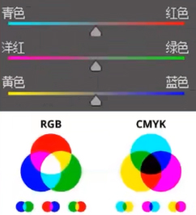

---|----|---- 创建参考线 ----|----|---
-----|----|---- 自由阵列 ----|----|----
---|----| 新建文件 |----|---
参考对象：无
---|----| 修改字体 |----|---
---|----| 文字大小 |----|---
---|----| 导出图片 |----|---
| 原文本: |
|
|
替换成: |
---------其他---------
参考
